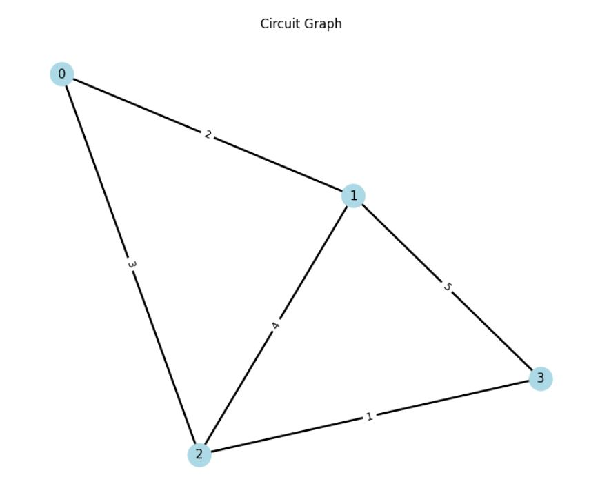
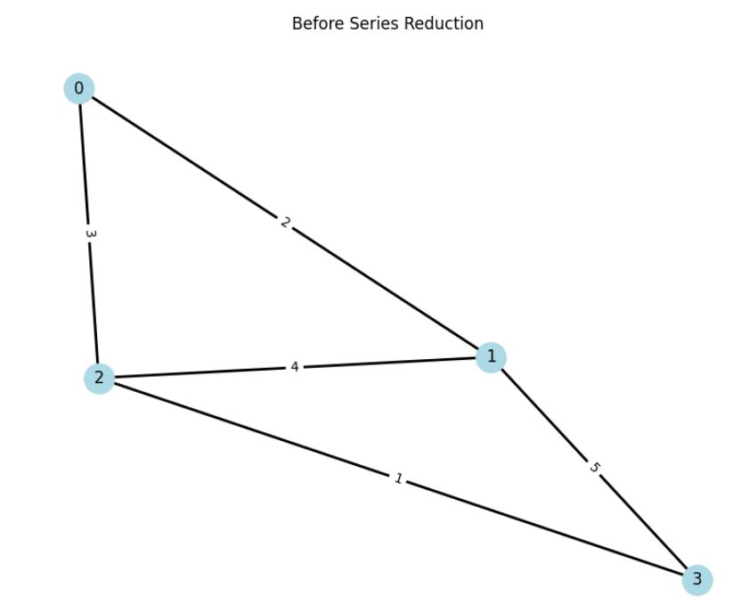
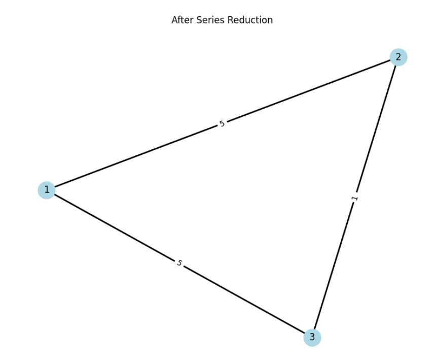
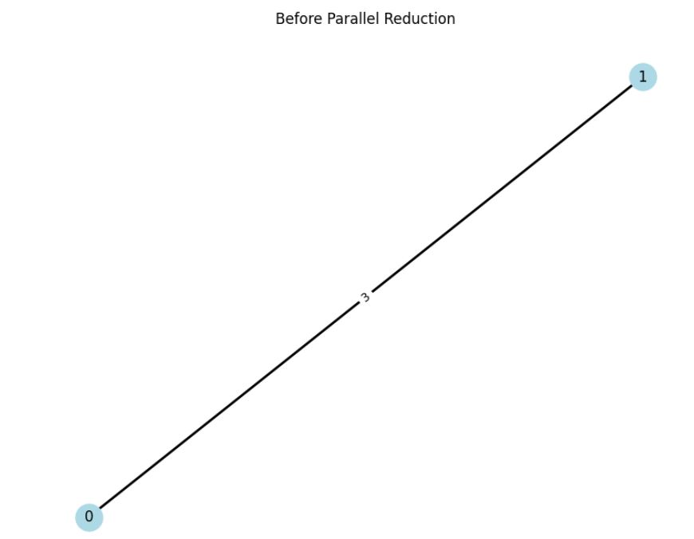
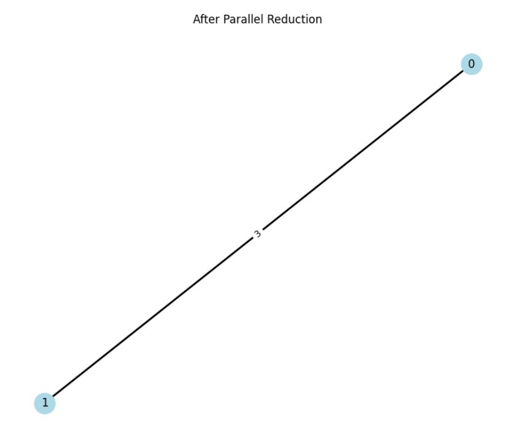
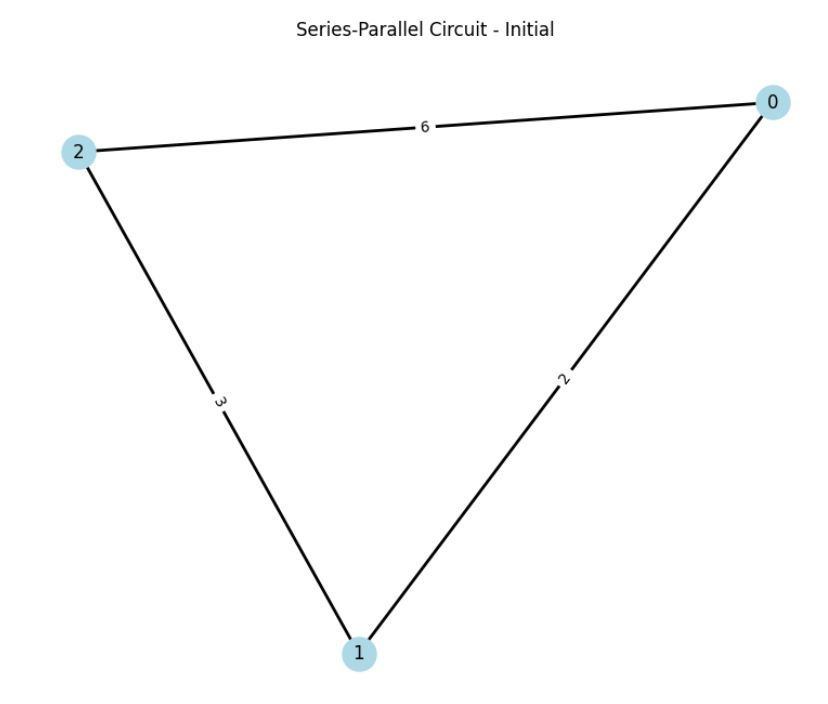
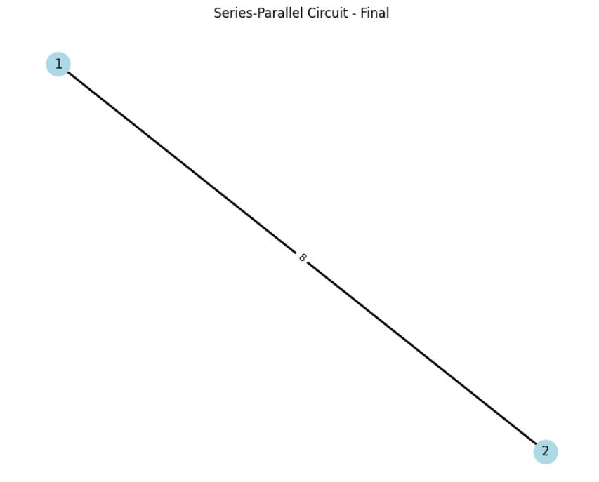

Problem 1
Equivalent Resistance Using Graph Theory
1. Theoretical Foundation
1.1 Basic Circuit Laws
For resistors in series and parallel, the equivalent resistance is given by:
Series: $$ R_{eq} = \sum_{i=1}^n R_i $$
Parallel: $$ \frac{1}{R_{eq}} = \sum_{i=1}^n \frac{1}{R_i} $$
1.2 Graph Representation
A circuit can be represented as a weighted undirected graph G(V,E) where:
- V: vertices (nodes) represent junctions
- E: edges represent resistors
- Weights: resistance values
import numpy as np
import matplotlib.pyplot as plt
import networkx as nx
def create_example_circuit():
G = nx.Graph()
# Add edges with resistance values
edges = [(0,1,2), (1,2,4), (2,3,1), (0,2,3), (1,3,5)]
G.add_weighted_edges_from(edges)
return G
def plot_circuit(G, title="Circuit Graph"):
plt.figure(figsize=(10, 8))
pos = nx.spring_layout(G)
# Draw edges with weights
nx.draw_networkx_edges(G, pos, width=2)
nx.draw_networkx_nodes(G, pos, node_color='lightblue',
node_size=500)
nx.draw_networkx_labels(G, pos)
# Add edge labels (resistance values)
edge_labels = nx.get_edge_attributes(G, 'weight')
nx.draw_networkx_edge_labels(G, pos, edge_labels)
plt.title(title)
plt.axis('off')
plt.show()
# Create and plot example circuit
G = create_example_circuit()
plot_circuit(G)

2. Algorithm Implementation
2.1 Series Reduction
For series reduction, we identify nodes with exactly two connections:
def find_series_nodes(G):
return [node for node in G.nodes()
if G.degree(node) == 2]
def reduce_series(G, node):
neighbors = list(G.neighbors(node))
r1 = G[node][neighbors[0]]['weight']
r2 = G[node][neighbors[1]]['weight']
# Add new combined resistance
G.add_edge(neighbors[0], neighbors[1],
weight=r1 + r2)
G.remove_node(node)
return G
# Demonstrate series reduction
G_series = create_example_circuit()
plot_circuit(G_series, "Before Series Reduction")
node = find_series_nodes(G_series)[0]
G_series = reduce_series(G_series, node)
plot_circuit(G_series, "After Series Reduction")


2.2 Parallel Reduction
For parallel resistors between the same nodes:
def reduce_parallel(G):
for u in G.nodes():
for v in G.nodes():
if u < v and G.has_edge(u, v):
# Find parallel edges
paths = list(nx.edge_disjoint_paths(G, u, v))
if len(paths) > 1:
# Calculate equivalent resistance
r_eq = 0
for path in paths:
r_path = sum(1/G[path[i]][path[i+1]]['weight']
for i in range(len(path)-1))
r_eq += r_path
r_eq = 1/r_eq
# Remove old edges and add new equivalent
for path in paths:
for i in range(len(path)-1):
G.remove_edge(path[i], path[i+1])
G.add_edge(u, v, weight=r_eq)
return G
# Demonstrate parallel reduction
G_parallel = nx.Graph()
G_parallel.add_weighted_edges_from([(0,1,2), (0,1,3)])
plot_circuit(G_parallel, "Before Parallel Reduction")
G_parallel = reduce_parallel(G_parallel)
plot_circuit(G_parallel, "After Parallel Reduction")
 
3. Complete Algorithm
def calculate_equivalent_resistance(G):
while len(G.nodes()) > 2:
# Try series reduction first
series_nodes = find_series_nodes(G)
if series_nodes:
G = reduce_series(G, series_nodes[0])
continue
# Then try parallel reduction
G_before = G.copy()
G = reduce_parallel(G)
if nx.is_isomorphic(G, G_before):
break
if len(G.nodes()) == 2:
nodes = list(G.nodes())
return G[nodes[0]][nodes[1]]['weight']
return None
# Test with example circuits
def test_circuit(edges, title="Test Circuit"):
G = nx.Graph()
G.add_weighted_edges_from(edges)
plot_circuit(G, f"{title} - Initial")
R_eq = calculate_equivalent_resistance(G)
print(f"Equivalent Resistance: {R_eq:.2f} Ω")
plot_circuit(G, f"{title} - Final")
return R_eq
# Example 1: Simple series-parallel
test_circuit([(0,1,2), (1,2,3), (0,2,6)],
"Series-Parallel Circuit")

Equivalent Resistance: 8.00 Ω

4. Analysis and Complexity
4.1 Time Complexity
- Series reduction: O(V) for locating nodes, O(1) for reduction
- Parallel reduction: O(V²) for examining all node pairs
- Overall: O(V³) in worst case scenarios
4.2 Space Complexity
- O(V + E) for storing the graph
- O(V) additional space for algorithm operations
5. Applications and Extensions
The graph-based circuit analysis method offers several significant applications and potential extensions:
5.1 Circuit Analysis Software
The algorithm can be incorporated into:
- Automated circuit simplification utilities
- Rapid resistance computation modules
- Real-time analysis platforms
- Component parameter optimization software
5.2 Network Optimization
The techniques readily extend to:
- Power grid analysis and modeling
- Circuit design optimization
- Load distribution calculations
- Network robustness evaluation
5.3 Educational Tools
The visual aspect makes it suitable for:
- Interactive circuit visualization
- Step-by-step reduction demonstrations
- Virtual circuit construction exercises
- Learning progress tracking systems
The graph theory approach delivers a strong base for these applications while upholding mathematical accuracy and computational effectiveness.
6. Conclusions
The graph theory approach offers:
- A structured method for circuit analysis
- Explicit visualization of reduction stages
- An adaptable framework for intricate circuits
Future enhancements could include:
- Voltage and current computations
- Support for active components
- Optimizations for specific circuit configurations